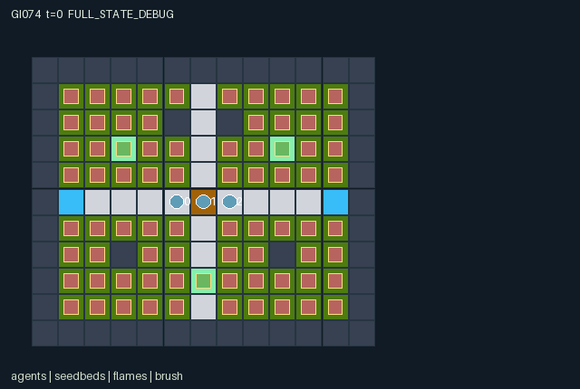

GI074 / SPATIAL
余烬公地
三名专长不同的角色围绕燃料、火势、水与苗床互动；回放保留实际失败。
Original saved demonstration
Recorded native state, often authored scripts or interventions; information scope and failures are preserved in the original provenance. This is a saved demonstration, not live browser play.

Release verification episode
Untrained uniform legal actions. Actual JAX state sampled along the full original episode; full-state debug camera. No human performance or learning claim.

Run this game
crucibles play --game 74
Start Python locally, then open the address printed by the terminal. Installation, multiplayer, takeover and keyboard controls →
Objective, rewards & ending
Exact task contract
{
"objective": "Extinguish all fire while preserving all three seedbeds, using spatial resupply, cooling, fuel removal and repair.",
"natural_termination": "Failure if any seedbed reaches zero health; otherwise success if all heat is zero. Failure wins simultaneous natural conditions.",
"interaction": "Movable specialists target actual adjacent cells. Spray precedes cutter/repair eligibility; synchronous finite-fuel fire and delayed resupply change later opportunities.",
"observation_access": "All current mechanism-relevant state is public. Each actor gets the exact declared flat observations and structural masks. Actions are public only after commitment; external PRNG provenance and future submitted actions are excluded. Derived scene arrays add no policy information."
}Declared per-step reward bounds: -6 to 6. Observability: fully_observable.
Rules
- Three distinct roles protect all three seedbeds. Coordinates and movement are real; walls block movement and fire.
- Actor 0 sprays adjacent cells using water and refills only at a well. Actor 1 cuts up to three brush fuel units. Actor 2 repairs a cool living bed using a kit and restocks only at the depot.
- Spray is applied before cut/repair heat eligibility, enabling a joint cooling-and-tool interaction. Each actor selects only one action per step.
- Dry existing fires consume one fuel unit and spread synchronously from one snapshot. Newly ignited cells cannot cascade again in the same step.
- Heat and wetness bars, flame/brush/water active masks and bed health all come from actual state. Generic glyphs are not custom flame shaders or spray arcs.
- Movement cannot enter old occupied cells or old heat above 1. All contenders for the same otherwise-free agent target remain in place.
- Seedbeds lose health after fire update. Any zero-health bed causes failure; otherwise no fire causes success. At 144 steps an unfinished episode truncates.
- Natural termination takes priority at the time limit. Ended raw states absorb; replay old events only once per episode, tick and slot.
- All current state is public. Previous committed actions may be shown; never display another role's pending action or external reset key.
- No rollout or rendered preview has occurred. This scene binds source state for a later trusted replay and supplies no canned successful trajectory.
Original mechanism document (historical status wording retained)
# 74 — Cinderline Commons — source attempt 00 Status: **AUTHORED_NOT_EXECUTED**. This is original authored source for one already-proposed game, not a new design count or an execution receipt. ## Rules and source evidence Three specialists share the original finite-fuel containment objective. The sprayer carries six water units and refills only on a well; the cutter removes up to three fuel units from eligible adjacent brush; the steward carries two repair kits and restocks only at the depot. Spray is applied before the other tools' heat checks, allowing a genuinely simultaneous cooling-plus-cut/repair action. Fire reads one post-tool snapshot, burns only old dry fires, does not cascade new ignitions in the same step, and damages seedbeds afterward. Wind rotates after each 16 transitions. The reward remains terminal ±5 minus 0.10 per actual damage unit, 0.001 per fire-consumed fuel unit, 0.0005 per cut unit and 0.002 per live step. - Map, roles and randomized ignition/wind: `candidate.py:43`. - Exact 1471-column observation order: `candidate.py:85`. - Union mask and heat-contingent tool eligibility: `candidate.py:115`. - Simultaneous old-occupancy movement: `candidate.py:152`. - Spray, cut and repair order: `candidate.py:172`. - Synchronous fire and old-wind exposure: `candidate.py:190`. - Post-fire health loss and lock: `candidate.py:202`. - Natural precedence and exact reward terms: `candidate.py:208`. - Actual fixed-slot transition events: `candidate.py:241`. - Raw ended-state absorption: `candidate.py:140`. ## Interface, geometry and information - The v2 contracts apply to ordinals 74/75 by the source-stage request despite their historical 72/73 headings. - Design step_count is represented by scalar int32 state.t. All small signed counters, directions, codes and coordinates use int32; masks use bool; observations/rewards use float32. - All state entity positions and event endpoints use [x=design column,y=design row]. Terrain, heat/fuel/wetness and map indexing remain [y,x]. Observation columns retain the design's row-then-column order. - Reset PRNG key and provenance remain outside numeric state. Both original reset distributions are preserved by the source; no seed-conditioned override or canonical reset replacement is used. - The v2 done leaf is done. Ended raw calls preserve the entire state and causes, return zero reward, and do not advance t. Natural termination takes priority over truncation. - Native action counts [10,9,10] are padded to union 10. Cutter action 9 is always masked false and raw-canonicalized to wait. Post-spray cutter/repair eligibility remains joint-action dependent. - Derived flattened heat/fuel/wetness views and flame/brush/wet active/visibility masks share actual cell coordinates; they add no dynamics or policy information. The action masks omit hot-target restrictions for cutting and repair because a simultaneous spray may change eligibility. Raw execution rejects an actually ineligible tool without spending resources. Contested agent destinations all fail; swaps/follows/cycles into old occupied cells fail. Movement requires old heat <=1, while a newly hot occupied cell may lock tools without blocking escape. Role 1 padding does not appear as a native action in last_actions. All map layouts are explicitly public in the manifest. Entity visibility equals the corresponding actual active mask for every role. Removed grazers/pucks use [-1,-1] only with inactive masks; gathers sanitize those sentinels. A ruined Cinderline bed remains a public map site even though its living entity becomes inactive. Observation row/column order is preserved despite the world position conversion to x/y. Action submissions are not visible before joint commitment. ## Termination, bounds and invariants Any ruined seedbed causes natural failure; otherwise no heat with living beds causes natural success. Natural failure takes priority if both occur. The 144-step horizon truncates only if no natural ending occurs. Fuel is monotonically nonincreasing; nonflammable terrain holds no fuel/heat; water, kits, heat, wetness and health retain their design limits. Movement preserves unique cells. Conservative observation bounds [-64,8] include the cumulative team return: at most 144 steps, at most three damage units per step, at most 858 total initial fuel units, and at most one terminal component bound the negative return above -64. Per-step reward lies inside [-6,6]. These are analytic containment bounds, not achieved performance. An already-ended raw state is returned unchanged, including t, last reward and last event buffers, while the returned reward is zero and dones are all true. Historical event buffers must be deduplicated using external episode identity, event_tick and slot. The kernel never auto-resets. ## Scene and event mapping The scene uses agent, plant, hazard and water glyphs attached to actual x/y state arrays. Heat, remaining fuel and wetness are flattened deterministic views of the physical grid, not display-only mechanics. Slots 0–2 are actor moves; 3–5 tools; 6–148 changed cells; 149–151 gross seedbed repair/damage; 152–154 locks; 155 wind; 156 ending; 157–159 remain inactive. Cell event payload is [old heat,new heat,old fuel,new fuel]; seedbed payload is [old health,repair,damage,new health]. The scene is declarative and contains no HTML, script, URL or invented trajectory. It supplies actual entity positions/masks and attribute/event bindings to the later trusted renderer. No real frame or animation has yet been generated. ## Explicit unresolved limits - No candidate import, JAX import, execution, JIT, vmap, rollout, training or trusted validator invocation occurred. Shape/dtype claims are source declarations awaiting trusted execution. - The safe generic scene vocabulary can bind moving actors and actual flame/brush/wet entities and quantities, but cannot prescribe custom flame-height shaders, spray arcs, cutter flashes or per-leaf art. Those richer effects are not claimed implemented. - No runtime solvability, numerical parity, balance, learning value or rendered-view acceptance is claimed. The original design uncertainties remain open. The package includes a fixed, unexecuted action script. Its initial-state requirements are explicit. The proposed seed is not evidence that reset selects those requirements; do not override or resample the source reset to manufacture the example. ## Provenance Author: `/root/astra_game_world_designer_001`; requested model `gpt-6-astra`, reasoning `max`. Source request SHA256: `ae7560c6c7e4dca45de71bb09283e94622a4c8d8523f08ab0acf5cf4a0db2cac`. Design JSON SHA256: `7d47b49f55fca94ca1e994d234f549b4e27bc5daeb1fd9f7d170108fb99dac40`. Source SHA256: `7c3c8e794ed83a2103d086623f9c01a837de9a6a80d2b5ec06abcf278fee9aa6`. Source split is train, final_test_used=false, source_attempt=0. Backend revision and token usage are unknown/null. One source attempt is authored for this already-existing design; repair attempts, environment calls, rollout steps and training updates are zero. No trusted validator PASS is claimed.
Commands
Roles & abilities
agent_0 sprayer
agent_1 cutter
agent_2 steward
Observation permissions
Training receives only the original observation rows. Role cameras use declared visibility; debug cameras are explicitly marked. Local benchmark records log debug exposure and role takeover history.
Exact observation layout
[
{
"slice": [
0,
1430
],
"meaning": "board row-major [11,13,10]: wall indicator; brush indicator; path indicator; well indicator; depot indicator; seedbed indicator; fuel/6; heat/3; wetness/3; seedbed health/4 at B, else 0.",
"visibility": "public"
},
{
"slice": [
1430,
1457
],
"meaning": "agent_table row-major [3,9]: row/10; column/12; role sprayer indicator; role cutter indicator; role steward indicator; water/6; repair kits/2; tool_lock; last_actions/9.",
"visibility": "public"
},
{
"slice": [
1457,
1468
],
"meaning": "global row-major [11]: step_count/horizon; wind N; wind E; wind S; wind W; wind_phase/15; done; terminated; truncated; outcome as -1/0/1; episode_return.",
"visibility": "public"
},
{
"slice": [
1468,
1471
],
"meaning": "One-hot observer actor ID.",
"visibility": "self"
}
]Entity visibility & attributes
[
{
"id": "agents",
"kind": "agent",
"count": 3,
"position": [
"agent_pos"
],
"active": [
"agent_active"
],
"visibility": [
"agent_visibility"
],
"attributes": [
{
"state_path": [
"agent_role"
],
"meaning": "0 sprayer; 1 cutter; 2 steward",
"display": "category"
},
{
"state_path": [
"water"
],
"meaning": "Actual carried water, 0..6; sprayer only",
"display": "bar"
},
{
"state_path": [
"repair_kits"
],
"meaning": "Actual repair kits, 0..2; steward only",
"display": "bar"
},
{
"state_path": [
"tool_lock"
],
"meaning": "One-step tool lock; movement still permitted",
"display": "flag"
},
{
"state_path": [
"last_actions"
],
"meaning": "Last committed native action; no precommit visibility",
"display": "category"
}
]
},
{
"id": "seedbeds",
"kind": "object",
"count": 3,
"position": [
"seedbed_pos"
],
"active": [
"seedbed_active"
],
"visibility": [
"seedbed_visibility"
],
"attributes": [
{
"state_path": [
"seedbed_health"
],
"meaning": "Remaining health 0..4; ruined sites remain marked by map tile",
"display": "bar"
}
]
},
{
"id": "flames",
"kind": "hazard",
"count": 143,
"position": [
"cell_pos"
],
"active": [
"flame_active"
],
"visibility": [
"flame_visibility"
],
"attributes": [
{
"state_path": [
"cell_heat"
],
"meaning": "Actual heat 1..3 when active",
"display": "bar"
}
]
},
{
"id": "brush",
"kind": "resource",
"count": 143,
"position": [
"cell_pos"
],
"active": [
"brush_active"
],
"visibility": [
"brush_visibility"
],
"attributes": [
{
"state_path": [
"cell_fuel"
],
"meaning": "Actual remaining brush fuel, 1..6 when active",
"display": "bar"
}
]
},
{
"id": "wet_ground",
"kind": "resource",
"count": 143,
"position": [
"cell_pos"
],
"active": [
"wet_active"
],
"visibility": [
"wet_visibility"
],
"attributes": [
{
"state_path": [
"cell_wetness"
],
"meaning": "Actual remaining wetness; disappearance follows integer decay",
"display": "bar"
}
]
}
]Actual verification & provenance
Per-game execution receipt
{
"game": "gi074",
"status": "PASS",
"verification_revision": 2,
"source_sha256": "7c3c8e794ed83a2103d086623f9c01a837de9a6a80d2b5ec06abcf278fee9aa6",
"seed": 20261101,
"runtime": {
"jax": "0.4.38",
"numpy": "1.26.4",
"devices": [
"TFRT_CPU_0"
]
},
"dimensions": {
"num_agents": 3,
"observation_size": 1471,
"num_actions": 10,
"max_steps": 144
},
"checks": {
"eager_reset": {
"status": "PASS",
"seconds": 1.8966751098632812
},
"observation_spaces_legal_masks": {
"status": "PASS",
"seconds": 2.0889899730682373
},
"eager_step": {
"status": "PASS",
"seconds": 1.6873650550842285
},
"jit_reset": {
"status": "PASS",
"seconds": 0.4262065887451172
},
"jit_step": {
"status": "PASS",
"seconds": 1.4548852443695068
},
"eager_jit_integer_parity_float_measurement": {
"status": "PASS",
"seconds": 0.001085042953491211
},
"jit_vmap_reset": {
"status": "PASS",
"seconds": 0.7440896034240723
},
"jit_vmap_step": {
"status": "PASS",
"seconds": 2.3343143463134766
},
"outer_autoreset_api": {
"status": "PASS",
"seconds": 2.5146663188934326
},
"full_original_horizon_episode_and_render": {
"status": "PASS",
"seconds": 2.441697359085083
}
},
"human_scores": null,
"browser_controls": "PENDING",
"failures": [],
"elapsed_seconds": 16.00904393196106,
"float_parity_max_abs": 0.0,
"numerical_parity": "EXACT",
"raw_terminal_absorbing": "PASS",
"terminal_outer_reset": "PASS",
"episode_steps": 10,
"scripted_random_returns": [
-6.09949997626245,
-6.09949997626245,
-6.09949997626245
],
"terminal": true,
"demo_information": "FULL_STATE_DEBUG",
"demo_frames": 3,
"render_roles_checked": 3
}Chromium control verification
{
"game": "gi074",
"status": "PASS",
"human_scores": null,
"engineering": true,
"checks": [
"catalog_selected_and_real_native_reset",
"dom_queue_and_native_step",
"second_participant_ownership_and_native_joint_step",
"all_roles_individually_controllable_no_role_cap",
"explicit_debug_camera",
"release_to_pure_ai_without_reset"
],
"seconds": 5.550839900970459
}Original identity and file hashes
{
"id": 74,
"key": "gi074",
"title": "余烬公地",
"summary": "三名专长不同的角色围绕燃料、火势、水与苗床互动；回放保留实际失败。",
"tags": [
"资源共享",
"火场"
],
"family": "spatial",
"dimensions": {
"num_agents": 3,
"observation_size": 1471,
"num_actions": 10,
"max_steps": 144
},
"source_sha256": "7c3c8e794ed83a2103d086623f9c01a837de9a6a80d2b5ec06abcf278fee9aa6",
"manifest_sha256": "ccdc5f759a805787cbf2e84495dab735377e972f1a9e55288b421614f7c99e20",
"files": [
{
"file": "candidate.py",
"sha256": "7c3c8e794ed83a2103d086623f9c01a837de9a6a80d2b5ec06abcf278fee9aa6",
"bytes": 17942,
"origin": "work/exp_2/game_incubator_v3/community_games222_225_visualization_root222_v1/native154_candidate/registry/v2/games/game-v3-00074/candidate.py"
},
{
"file": "manifest.json",
"sha256": "ccdc5f759a805787cbf2e84495dab735377e972f1a9e55288b421614f7c99e20",
"bytes": 16489,
"origin": "work/exp_2/game_incubator_v3/community_games222_225_visualization_root222_v1/native154_candidate/registry/v2/games/game-v3-00074/manifest.json"
},
{
"file": "scene.json",
"sha256": "c16eda624b9c3bf1bed20b42b1e74c9d9258c688774388d47849e37535c4ad70",
"bytes": 8482,
"origin": "work/exp_2/game_incubator_v3/community_games222_225_visualization_root222_v1/native154_candidate/registry/v2/games/game-v3-00074/scene.json"
},
{
"file": "mechanism.md",
"sha256": "859e1b2b2abdaf1991dee7ba199e730ed0bca072e22562db3aee4518a4e6e36b",
"bytes": 7125,
"origin": "work/exp_2/game_incubator_v3/sources/game-v3-00074/attempt_00/mechanism.md"
},
{
"file": "playthrough.json",
"sha256": "cd4815a505cd449e7a6d27c812612a9c2e8d01cd9f4aeea676d217c5e77360b3",
"bytes": 2221,
"origin": "work/exp_2/game_incubator_v3/sources/game-v3-00074/attempt_00/playthrough.json"
}
],
"original_status": "NATIVE154_REFERENCE",
"original_saved_replay": true,
"release_validation": "PASS",
"human_scores": null,
"browser_validation": "PASS"
}